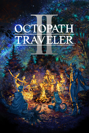

OCTOPATH TRAVELER II
OCTOPATH TRAVELER II
Detalles
|  | |
| Tiempo de juego | No Jugado |
| Última actividad | Nunca |
| Añadido | 1/25/2025 12:08:57 |
| Modificado | 2/5/2025 0:34:46 |
| Estado de finalización | Not Played |
| Librería | Playnite |
| Fuente | 1 TB EXT |
| Plataforma | PC (Windows) |
| Fecha de lanzamiento | 2/24/2023 |
| Puntuación de la Comunidad | 92 |
| Puntuación de la Crítica | |
| Puntuación de usuario | |
| Género | Rol |
| Desarrollador | ACQUIRE Corp. Square Enix |
| Editor | Square Enix |
| Característica | Cloud Saves Compat. Total Con Mando Cromos De Logros De Préstamo Familiar Un Jugador |
| Enlaces | Punto de encuentro Discusiones Guías Noticias Página de la tienda PCGamingWiki Logros |
| Tag | 2.5D Adorables Ambientales Anime Aventura Buena trama Casuales Combate por turnos Emocionales Estrategia Fantasía Las elecciones importan Magia Mundo abierto Pixelados Por turnos Rol Rol en grupo Rol japonés Un jugador |
Descripción

La historia de este juego transcurre en Solistia, un mundo compuesto por los continentes del Levante y del Poniente, así como una franja oceánica que divide a ambas tierras.
En estos tiempos de constante cambio, los inmensos navíos surcan las concurridas rutas marítimas y el vapor supone toda una revolución tecnológica.
Hay quienes se entregan en cuerpo y alma a apoyar a las múltiples y variadas estrellas del escenario y el sector del espectáculo, mientras que, al mismo tiempo, otros sufren en sus carnes las consecuencias de la guerra, las plagas y la miseria.
En esta recóndita tierra, ocho viajantes de diversos orígenes emprenden sus respectivos viajes por razones personales. Vive junto a este variopinto grupo tales experiencias y explora todo lo que tiene Solistia para ofrecerte, mientras aprovechas sus habilidades únicas para ayudarte en tu travesía.
¡Emprende el primer paso de tu aventura pisando firme!

- Elige de entre ocho viajantes: cada cual tiene su propio pasado, propósitos y habilidades únicas.

- Los característicos gráficos HD-2D de la saga, junto a una combinación de pixel art tradicional y 3DCG, han alcanzado nuevas cotas de diseño.
- La historia de este juego transcurre en Solistia, donde conviven todo tipo de culturas de este a oeste en plena prosperidad industrial. Recorre el océano y explora cada confín allende los mares, mientras el día y la noche se entrelazan de forma visible.
- Cada viajante cuenta con su propia acción de senda, con la que podrá enfrentarse a otras personas, adquirir productos de estas o guiarlas, entre otras tantas posibilidades. ¿Adónde te dirigirás? ¿Qué harás al llegar? ¿Qué historia rememorarás? Ante ti se extiende una infinitud de caminos.
- Las mecánicas principales del juego original se han conservado para esta nueva entrega, como la total libertad para asignar trabajos y habilidades a tus viajantes, así como el sistema de «Ruptura» e «Impulso» que daba pie a combates muy emocionantes. Al mismo tiempo, se han añadido nuevas y variadas mecánicas que enriquecerán esta entrega.


- Cambia entre el día y la noche pulsando un botón para transformar las ciudades y sus habitantes. Las acciones de senda también varían dependiendo del momento del día, ampliando las posibilidades de exploración.

- Un nuevo tipo de trama protagonizada por dos viajantes que comparten el mismo camino.

- Cada viajante posee un potencial único al que puede recurrir para cambiar las tornas del combate.

- Cruza los ríos en canoa o atraviesa los mares en barco para alcanzar cada rincón del mundo.